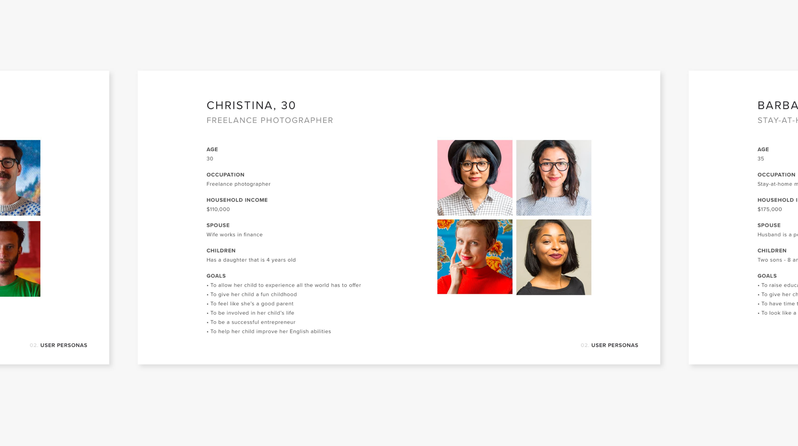
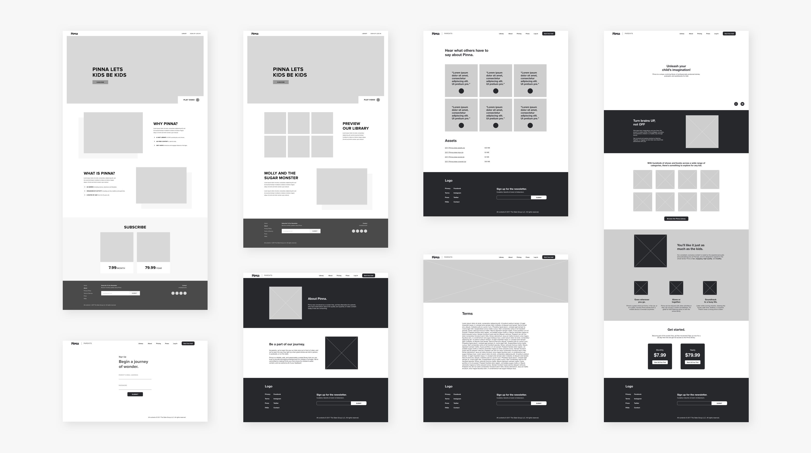
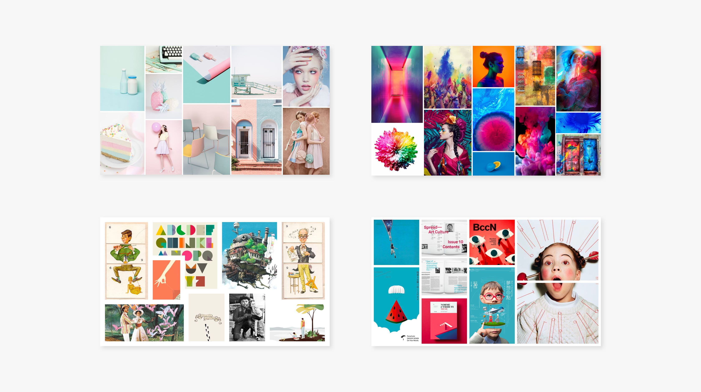
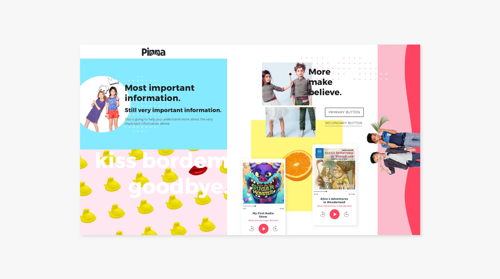
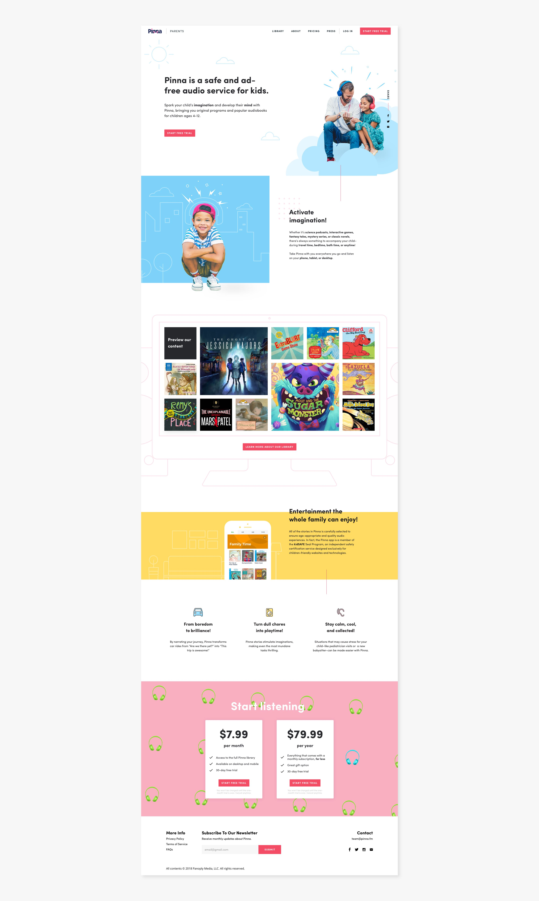
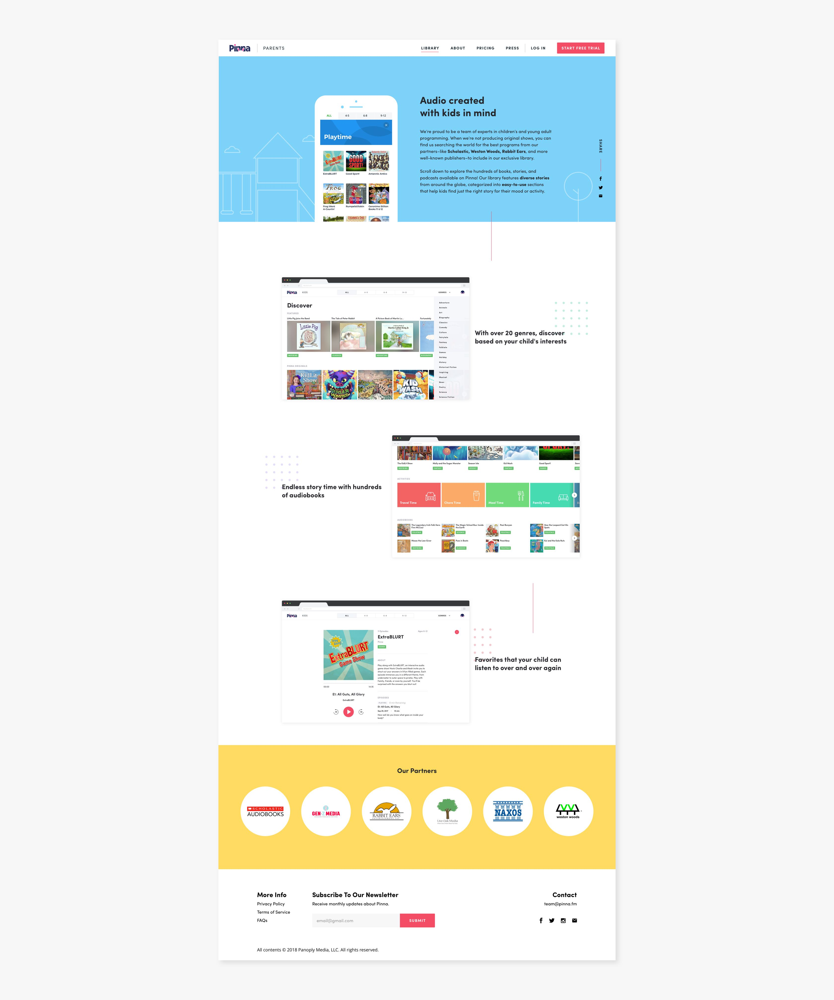
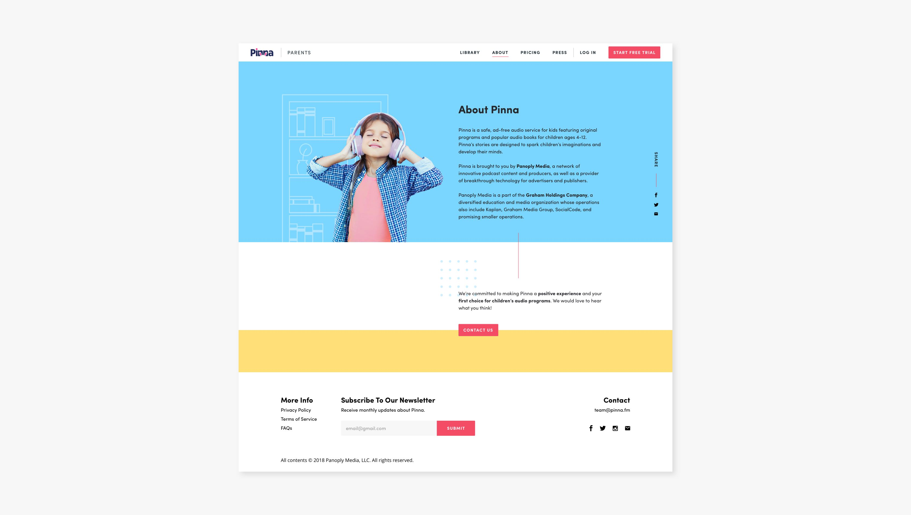
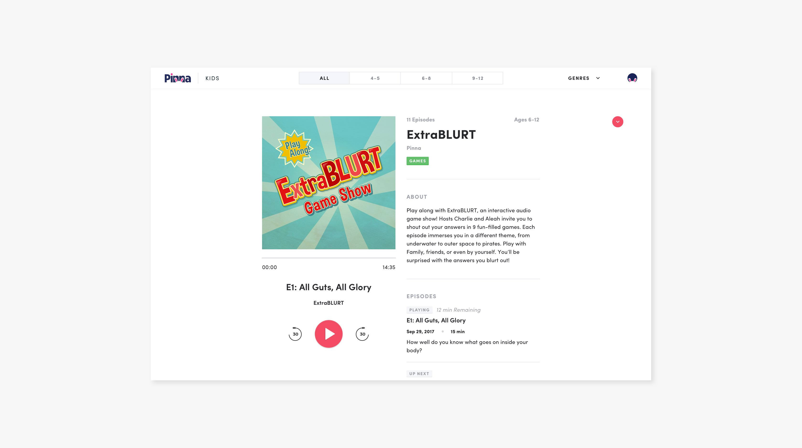

Parent user personas
Wireframes
We then created wireframes based on the user stories from our research.

Initial wireframes for Pinna.fm (parents’ side)
Inspiration
Before moving into design, we created mood boards and style tiles for four different design directions. We tested these directions with users to identify the words, tone and audience that people tend to associate with each style.

Mood boards showing four possible style directions for the site
Style Direction
We create one final style tile based on testing feedback, incorporating the elements from each style that resonated with users. We landed on bright colors, clever copy and playful design details and patterns. We also decided to combine fantastical illustrations with realistic photography to represent Pinna engaging young users' imaginations.

Final style direction, based on testing results
Mockups
Our final deliverables were high-fidelity mockups for desktop, tablet and mobile.

Home page of Pinna.fm (parents’ side)

Library explanation page (parents’ side)

Contact, press, and sign up pages (parents’ side)

Audio player page (kids’ side)